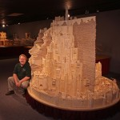

The Viral Wild Animal Pics of January and February!

Here we go again guys! This is a collection of the most retweeted pictures of @SWildlfepics Twitter Account. You guys have a good taste in wildlife pics! It’s also funny how most of these viral pictures include either lions, tigers or other big cats. I guess the internet just loves cats :3…- The Fascinating Pics Team
Continue reading »7 Most Expensive Homes In The World

A collection of the most expensive houses in the world! Do you want to know much the world’s most expensive houses cost? Click continue reading!
Continue reading »It's Mind-Blowing How This Artist Create These Naturally Beautiful Rock Sculptures!
He doesn’t use photoshop, nails, or wires to stage these stunning formations. He uses an “adhesive” as old as earth itself, something he likes to call gravity glue. According to Michael Grab, the process of creating balanced rock sculptures – held together solely by the force of the earth’s gravity – can be broken down into two component parts: the technical aspects of stone balancing, and the deeply spiritual nature of this delicate practice.
Continue reading »Incredible Animal-Shaped Hair Sculptures

If you thought your hair could look pretty wild somedays, you might rethink that after checking out the incredible styles conceptualized by Japanese pop artist and director Nagi Noda. Her Hair Hats series features fifteen women wearing animal sculptures made of hair weaves, real hair, and wire on their heads without a care in the world.
Continue reading »Most Famous Paintings with Hidden Codes

Conspiracies carried out through subtle signs in works of art. Man will always be fascinated with artworks, its symbolism’s, as well as the secrets they hold. Here are the 10 most famous paintings with hidden codes.
Continue reading »Sometimes an Image is Worth a Thousand Words...

Sometimes an Image is worth a thousand words… We are posting the world’s most inspiring and fascinating Quote Images on our @Quotelmages pages on Social Media. Images that Quote the truth or are a source of inspiration! This is a collection of some of the best Quotes we could find across the internet, these are also the Quotes that received the most Likes from you guys on Facebook! Enjoy!!
Continue reading »These Adorable Puppies Looke Just Like Miniature Panda Cubs

We understand just how deeply heartbreaking it is that pandas aren’t suitable to be house pets, but these adorable panda-like puppies from China offer those of us who adore pandas a glimmer of hope.These adorable critters were born in the Jiangsu region in Northeastern China. Neither of their parents look much like pandas – mom was a local rural dog and dad was a Pekinese dog.
Continue reading »3 Years and 420,000 Matchsticks - This is What it Took to Build J.R.R. Tolkien's The City of Kings
Iowa-based artist Pat Acton spent 3 years building a colossal model of Minas Tirith, the capital of Gondor in J.R.R. Tolkien’s fictional Middle-Earth world. All he used was 420,000 carefully-placed matchsticks and gallons of glue. An additional 24,000 small wooden blocks were used to build up Mount Mindoullin, the supportive structure behind the whole sculpture. We have included some of his other masterpieces too in this gallery, enjoy!
Continue reading »Hidden Messages in Cartoons
Everyone loves cartoons – both children and adults. There is always a temptation by a cartoonist to slip in a bit of something extra – something only they are aware of, but thanks to scores of teenaged boys with a pause button and too much time on their hands, we are all able to see these little in-jokes. Unfortunately for companies like Disney, some of them are a little on the naughty side and they have been the root of legal battles.
Continue reading »These grooms Cry Tears of Joy When They Saw Their Brides

Weddings are quite an emotional occasion for the bride, the groom and the witnesses of the ceremony. We usually hear about the bride’s tears of joy and rarely picture the groom trying to control his emotions, but this is exactly what happened to these lucky guys when they laid eyes on their beautiful brides for the first time.
Continue reading »Absolutely Adorable Baby Gorillas

Aww…. just look at their cute faces… However we really need to step up and do something about there endanged status. Gorillas are the largest members of the primate family and are closely related to humans, with 98% of their DNA identical to that of humans. Unlike other primates they are terrestrial, meaning they do not climb trees and are land dwelling, inhabiting the tropical rainforests of central Africa. Historically the gorilla has been portrayed as a vicious killer; however they are shy gentle creatures that would not attack humans unless provoked.
Continue reading »More Creative Pencil vs Camera Artworks

Some people are just a little bit more creative than others, some actually believe they can make a picture more interesting by drawing some pieces of a scene themselves! They would include the piece of drawing later when taking a picture in the right perspective. Here are some great ones by Ben Hiene. (Part 2)
Continue reading »Super Adorable Animal Comics!

Elizabeth Climo, or simply Liz Climo, is a talented young animator currently working with the very populair The Simpsons TV-show. When her day job ends, however, she still has some time, creative energy and inspiration left to create these adorable and witty comics that present various animals in amusing everyday interactions. (This is part 3 :] )
Continue reading »Oldest Living Trees in the World

There are colonies of clonal trees that have lived for tens of thousands of years, but there’s something majestic about a single tree able to stand on its own for millennia. These ancient trees have bore witness to the rise and fall of civilizations, survived changing climates, and even persevered through the fervent development of human industry. They are a testament to the long view that Mother Nature takes in tending the Earth.
Continue reading »The Tiny Tenrec

Sometimes animals resemble one another very closely, without actually being related. The tenrec from Madagascar is such an animal. Meet this very distant relative of the… elephant. Read more about this fascinating creature!
Continue reading »If It Fits, I Sits: These Cats Prove That No Space Is Too Tight

Cats never fail to amaze us with their determination to fit into tight spaces, but the cats in these photos are the best of their best. Although it might look like some of them might not fit – where there’s a will, there’s a way.
Continue reading »Places to Visit Before they Disappear

The world is changing. You can’t have failed to notice that – global warming, ice caps melting, habitats disappearing…the world we hand down to our children and their children might be very different. As a result, there are places that you should probably put on your list to visit in the next few years, before they disappear or are irreversibly changed. Some of these places are culturally significant, some are examples of outstanding natural beauty but they’re all under threat. Start planning your trip while you can!
Continue reading »Something you simply have to do at least once in your life!

Finish the puzzle and find out what “you simple have to do once in your life” and more importantly: Why!
Continue reading »Adorable before and After Pictures of Animals Growing Up

Pets and people share a very special bond when they grow up together, which is why we’ve compiled a list of pictures of people and their pets growing up and sometimes growing old together. Beautiful gallery! :3
Continue reading »Impressively Detailed Pen Doodles

Do you remember those imaginative doodles you used to make in your high school notebook? Maybe you still make them. But Phillipine-based illustrator Kerby Rosanes creates doodles (as he calls them) that are probably several orders of magnitude greater than any you or I have ever made. His most recent work is called “Time Guardian.” This stunning portrait of an owl features an unexpected twist – the whole thing is drawn out of minutely detailed gears, cogs and other mechanical bits, giving the soaring owl an intricate steampunk look…But the others are awesome too!
Continue reading »